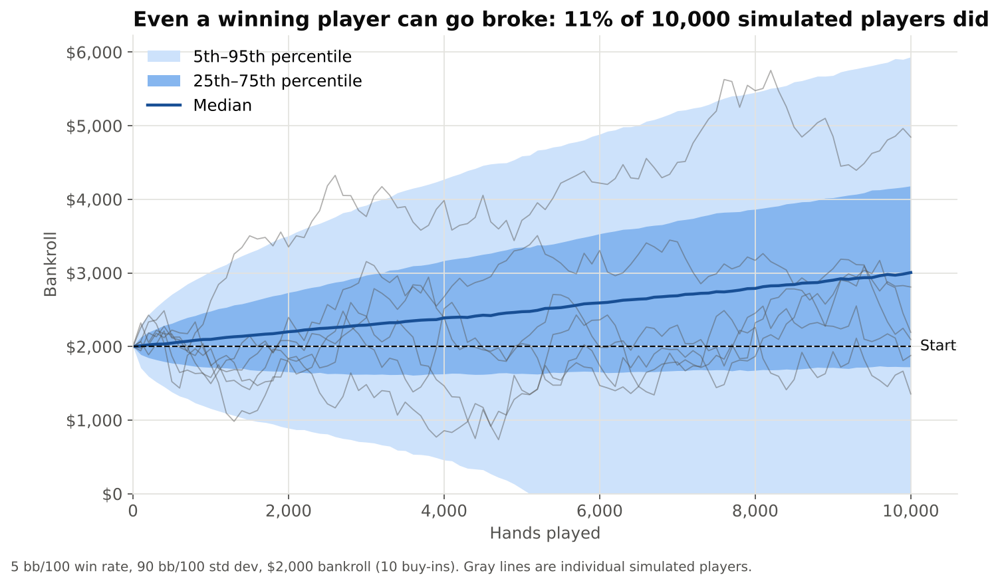
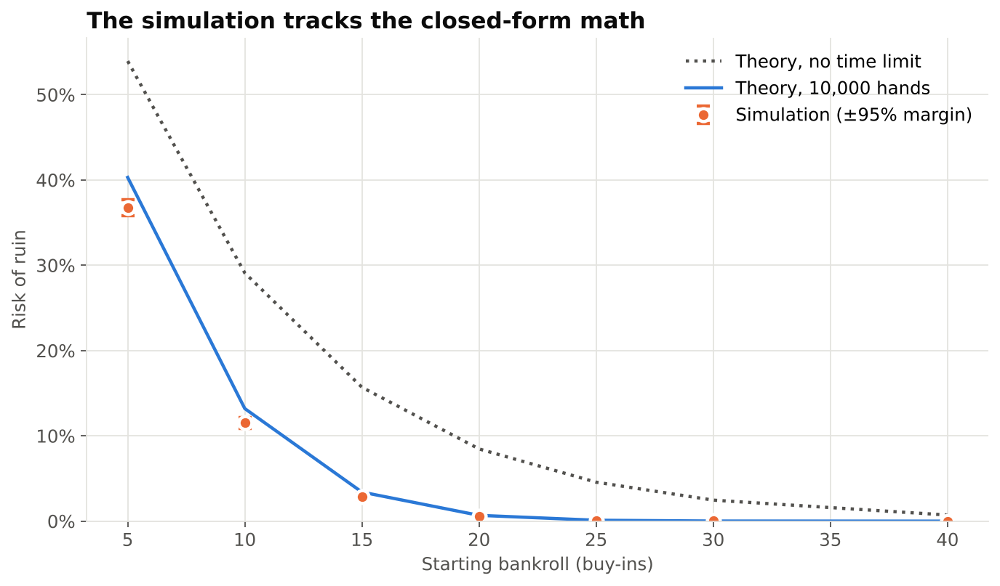
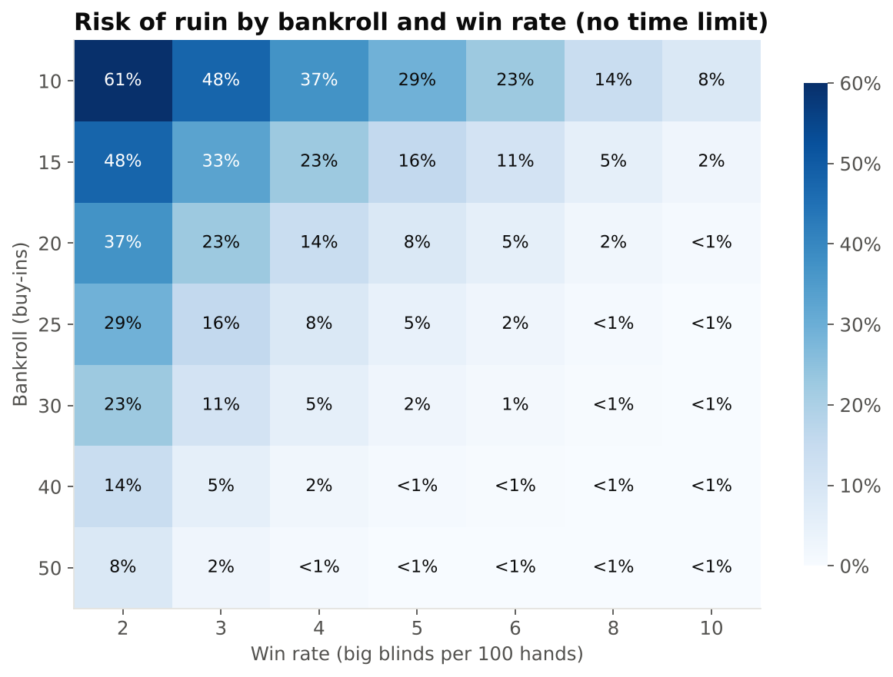
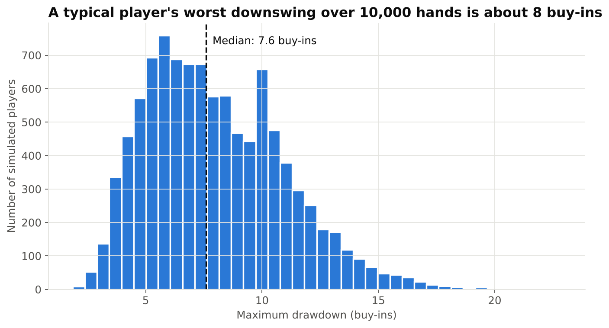
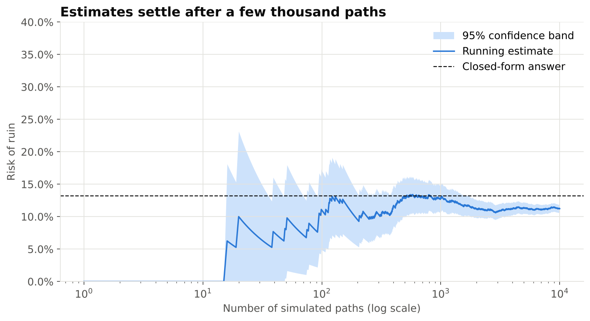

Monte Carlo Bankroll Risk Model
A poker player with a real edge still faces big swings. How much capital do they need so bad luck doesn't wipe them out before the edge pays off? I simulated 10,000 players with the same skill and bankroll to find out. It's the same problem traders, program budgets and startups face.
- Excel
- Python
- NumPy
- pandas
- SciPy
- Matplotlib
Two simulated players with the same skill and the same $2,000 bankroll. One drops to $109, survives and finishes at $5,130. The other goes broke at hand 7,000. Simulated data.
Having an edge isn't enough
key findingsAssumptions: $1/$2 No-Limit Hold'em, 5 bb/100 win rate, 90 bb/100 standard deviation, $2,000 starting bankroll (10 buy-ins of $200), 10,000 hands per path.
Why it matters
Positive expected return, high volatility, and a capital base that can hit zero first. Whether you survive depends on how big the swings are compared to your edge, not just on whether the edge is positive.
- Trading and investingHow much capital a strategy needs to survive its drawdowns.
- Program budgetsHow much margin a project needs to finish on budget at a given confidence level.
- Startup runwayThe chance a company runs out of cash before it becomes profitable.
How the model works
- SimulateEach block of 100 hands is drawn from a normal distribution using the win rate and standard deviation. 10,000 paths of 100 blocks, vectorized in NumPy. A path that hits $0 stays at $0.
- MeasureRisk of ruin, the spread of ending bankrolls, and maximum drawdown: the largest drop from a running peak, the same way funds measure their worst losing stretch.
- ValidateCompare simulated risk of ruin with the closed-form math for a random walk with drift, including
P(ruin) = exp(−2μB/σ²)with no time limit. - Test sensitivityMap how bankroll size and win rate trade off, and solve for the bankroll that hits a 5% risk-of-ruin target.
I built it twice: a formula-driven Excel version (500 paths, summary tab, sensitivity table and charts) and a Python version (10,000 paths, validation, a convergence test and a sensitivity heatmap).
What the simulation shows





Explore the model
What I'm working on next
- DoneCore modelExcel and Python simulation, validation, sensitivity analysis and the animated replay.
- NextMore realistic assumptionsTreat the win rate as uncertain, add a move-down-in-stakes rule, and use fat-tailed (Student's t) results to stress-test big swings.
- PlannedInteractive appA Streamlit app with sliders.
- PlannedApplying the methodUse the same approach on a defense program budget to estimate the chance it finishes on budget.
What the model doesn't capture yet
- The win rate is treated as known. In practice it's estimated from noisy results, so the true risk is higher.
- Ruin means $0. Real players are effectively broke once they can't afford a buy-in, and many move down in stakes instead.
- Normally distributed results understate rare extreme swings.
All results are simulated, not from real players.